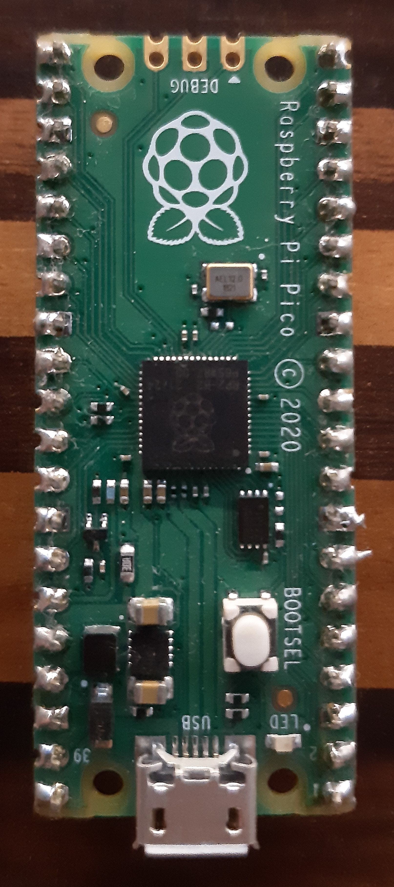

If you need a few more pins to connect peripherals of your choice in Klipper, you may have a look at the Raspberry Pi Pico
It's very easy to use in Klipper, because klipper provides a firmware that can flashed to Raspberry Pi Pico to directly integrate into klipper.
You need to:
- build and flash the klipper firmware to the Raspberry Pi Pico
- enable an additional mcu in your Klipper config files.
How to flash Klipper to Raspberry Pi Pico
Build klipper for Raspberry Pi Pico
- Go to klipper directory
- call make menuconfig
- select
- Micro-controller Architecture
- Raspberry PI RP2040
- Communication Interface
- USB
- save configuration
- build firmware
- call make
- file needed for flashing can be found in
- klipper/out/klipper.uf2
Flash klipper firmware Raspberry Pi Pico
- Press the BOOTSEL button on the Raspberry Pi Pico,
- connected the USB cable.
- The RPi Pico will be detected as USB flash device
- Mount flash device (see below)
- Copy klipper.uf2 to RPi Pico Flash Drive.
- RPi Pico should now automatically perform a reboot and execute downloaded klipper firmware.
- From now on the RPi Pico Module will be detected as an serial interface. Which can be configured in the klipper configuration.
Commands to mount the raspberry pi pico flash drive and copy the firmware to the raspberry pi pico
mkdir -p /tmp/rpi
sudo mount /dev/sda1 /tmp/rpi/
sudo cp out/klipper.uf2 /tmp/rpi/
sudo umount /tmp/rpi
Klipper configuration
Connect to you Klipper machine per SSH
- look for the serial device id of the raspberry pi
pi@mainsailos:~$ ls /dev/serial/by-id/ usb-1a86_USB_Serial-if00-port0 usb-Klipper_rp2040_E660C0621359AD30-if00
usb-Klipper_rp2040_E660C0621359AD30-if00 is the Raspberry Pi Pico
Open your printer.cfg
- Add [mcu] entry for the raspberry pi pico
Use entry from step 2
[mcu rp_pico] serial: /dev/serial/by-id/usb-Klipper_rp2040_E660C0621359AD30-if00 baud: 250000 restart_method: command
- Configure klipper to use the GPIOs for what you want
[output_pin raspi_onboard_led] pin: rp_pico:gpio25
Save + Apply Configuration
Now you should be able to switch the onboard LED on off from klipper.